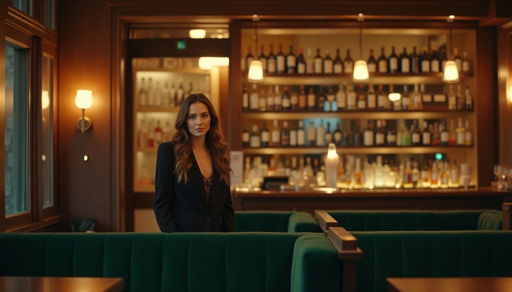
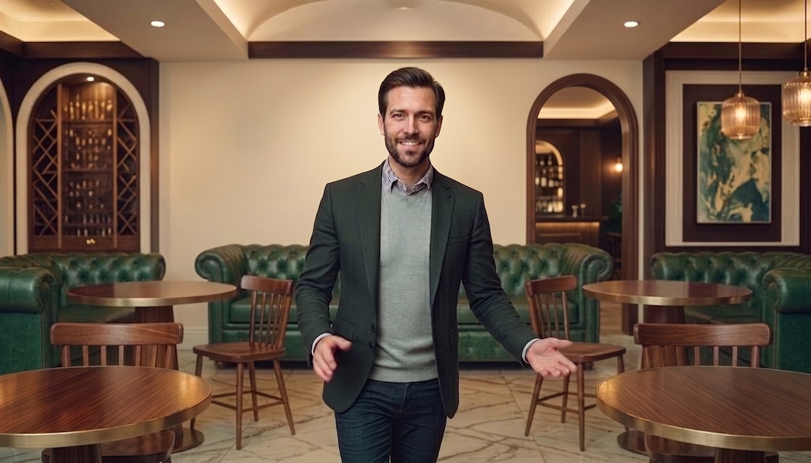
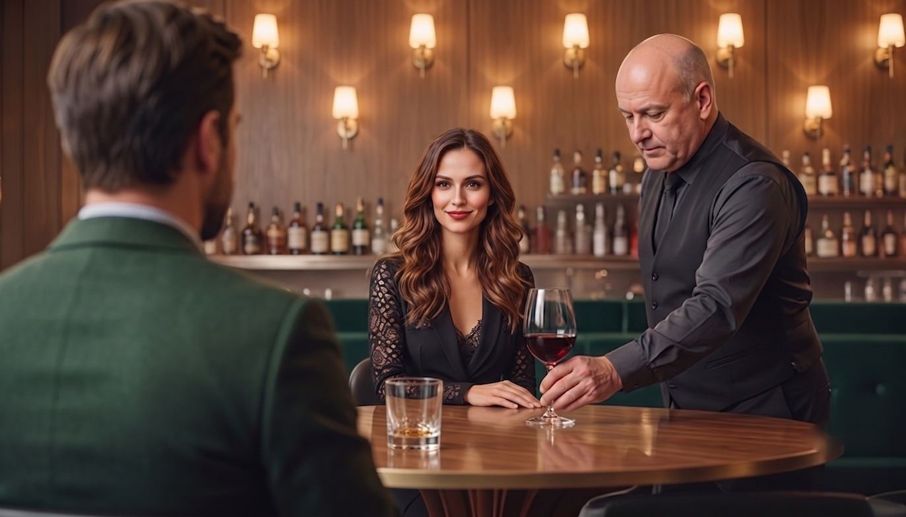
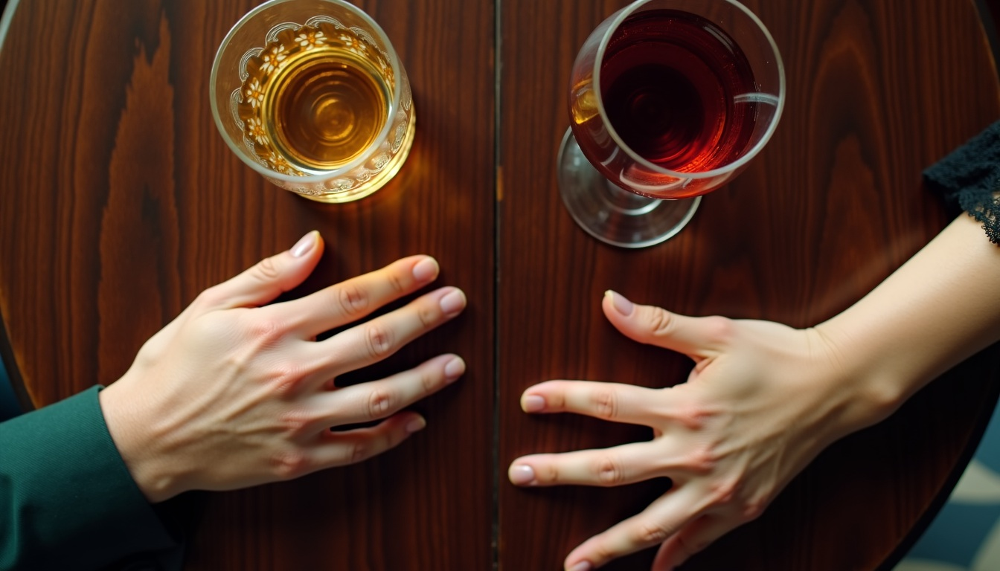

Jim siede a un tavolo con gli avambracci poggiati sopra, rivolto verso la sala con uno sguardo sorridente e tranquillizzante per accogliere la donna che aspetta. L'ambiente è un lounge-bar raffinato, silenzioso ed elegante in stile Art Déco, con divanetti in velluto verde scuro, sedie in noce e dipinti astratti in oro e verde. Il locale è vuoto, immerso in un'illuminazione calda e ambrata.

Dalla prospettiva di Jim vediamo la porta d'ingresso dall'altra parte della sala che si apre: entra Barbara, un po' nervosa, che scansiona il locale con uno sguardo investigativo. Sullo sfondo si nota la parete del bancone con molte bottiglie esposte, in un'atmosfera luminosa, calda e leggermente in penombra, interrotta da intense lampade da parete.

Semi-totale della sala con diversi tavoli vuoti. Jim si alza e cammina in avanti. Dall'ingresso attraverso il locale, verso Barbara (fuori campo) facendole un gesto di accoglienza con la mano.

Jim seduto di spalle, guarda Barbara. Lei, di fronte, seduta allo stesso tavolo, ricambia lo sguardo. Sulla destra, un cameriere 50/60enne si avvicina con discrezione per servire sul tavolo un calice di vino rosso ordinato da Jim per Barbara. Sullo sfondo è visibile la parete del bancone.
BARBARAScusa il ritardo, il traffico romano
JIMOrdiniamo! Cosa preferisci?
BARBARAMi affido a te (sorride)
JIMVa bene un calice di Primitivo 2015?
BARBARAStupendo (sorride, abituata a essere ammirata)
Barbara guarda di fronte sorridendo — si suppone in direzione di Jim, fuori campo. Sul tavolo il calice di vino. Sullo sfondo si intravede la parete del bancone in un'inquadratura più ravvicinata.
BARBARANella foto avevi la barba più corta
JIMHo smesso di pretendere di essere qualcun altro. Almeno con la barba… ok, pessima battuta.
BARBARAUna pausa. Sorride.
Inquadratura più ravvicinata. Barbara è seduta e si è tolta il blazer, mostrando un top nero in pizzo semi-trasparente. Stringe il calice di vino tra le mani e fissa Jim (fuori campo) con uno sguardo penetrante. Lo sfondo mostra la parete del bancone fortemente sfocata.
Jim, sorridente e visibilmente soddisfatto dell'andamento della serata, solleva il bicchiere di whisky accennando un gesto di brindisi verso Barbara.
JIMA noi!

Inquadratura dall'alto incentrata sul tavolo di legno. Inquadrati i due bicchieri — un calice di vino rosso e un bicchiere da whisky — vicini alle mani dei due protagonisti distese sul tavolo. Le dita di lei si aprono ma non arrivano a toccare quelle di lui.
Jim e Barbara sono seduti l'uno di fronte all'altra, con gli avambracci appoggiati sul tavolo. Si guardano fissi negli occhi in un momento di intesa silenziosa e intensa. Lei appoggia le mani sopra quelle di lui. Sul tavolo è presente il bicchiere di whisky di Jim, appena consumato, e il calice di Barbara ormai quasi vuoto. Lo sfondo mostra la parete del bancone sfocata.
Inquadratura ravvicinata dei due protagonisti al tavolo. Jim prende delicatamente il capo e il collo di Barbara per avvicinarla a sé, mentre lei gli posa la mano sul petto con tenerezza sensuale. I due si sfiorano le labbra al limite dell'atto di baciarsi. Si nota che lui ha la fede al dito, ma è un dettaglio di poca importanza…